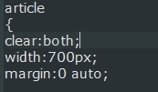
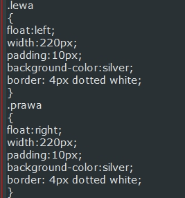
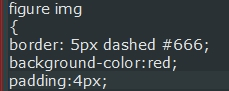
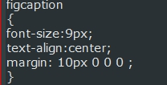
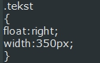
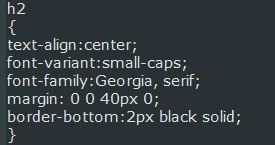

Zespół Szkół Łączności w Krakowie im. "Obrońców Poczty Polskiej w Gdańsku"
Galeria zdjęć
W tej części strony pokażę sposób wykonania galerii zdjęć, ale zanim przejdziemy to wyjaśnień przedstawię przykład.Odsyłacz do przykładuWszystkie znaczniki, które pojawią się tutaj zostały już omówione w sekcji "Nowe znaczniki". Nie będę ich powtórnie tłumaczył, lecz odwołuje się właśnie do tej części strony, która została już temu poświęcona.

Każde zdjęcie razem z podpisem, nagłówkiem i tekstem obok umieszczone jest w znaczniku <article>. Dla tego znacznika ustalamy stałą szerokość, środkujemy za pomocą margina oraz zapobiegamy wszelkim rozsunięciom poprzez użycie właściwości clear:both;

Dla <figure>, w którym znajduje się zdjęcie z podpisem, ustawiamy klasy i w zależności po której stronie ma być zdjęcie ustawiamy opływanie z prawej lub lewej. Poza tym ustawiamy stałą szerokość. Kolor tła i ustawienie ramki to środki stylistyczne, które utworzą nam podwójną ramkę na zdjęciu.

Dla samego obrazka ustawiamy ponownie kolor tła i ramkę. Ponownie jest to kwestia tylko wyglądu. Ustawienie paddingu wpływa na oddalenie obrazka od ramki, która go otacza. Odsłaniamy przez to tło ustalone dla <img/>.

Dla <figcaption> oprócz kwestii gustu kolorów i wielkości czcionki możemy za pomocą marginów oddalić podpis od obrazka i wyśrodkować tekst za pomocą text-align.

Tekst, który znajduje się obok obrazka umieszczamy w <div> i nadajemy mu jakąś klasę, ułatwi to nam format wszystkich tekstów, ponieważ klasy nie są unikalne.Następnie ustalamy dla tego wydzielonego bloku stałą szerokość oraz opływanie, najlepiej do prawej strony. Bez ustawionego opływania niektóre teksty nie znajdowałyby się obok odpowiedniego zdjęcia.

Nagłówek znajdujący się nad tekstem umieszczamy w znaczniku <h{1,2...}>. Formatujemy go według własnych potrzeb, lecz można tu na przykład wspomnieć o ciekawym rozwiązaniu podkreślenia tekstu za pomocą ustawienia ramy dolnej.